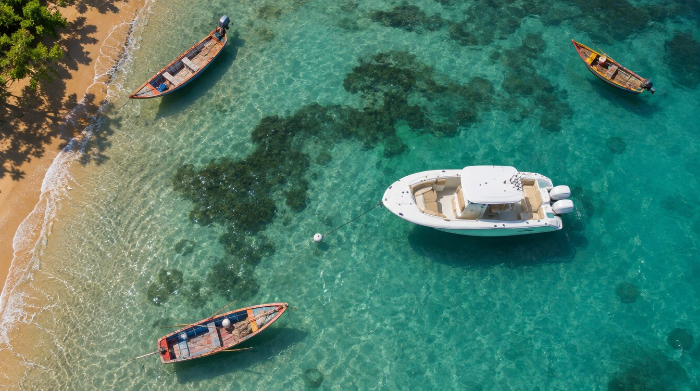

1OUVERTURE · BATEAU EN NAVIGATION0:00 – 0:03
Drone : le Sundream file sur le bleu profond au large de la Martinique, la skipper seule à la barre, sillage blanc, sun glitter. Montée lente ou tilt vers l'horizon. Titre en incrust léger possible.
Drone · verticale 90° · ND · bateau en navigation

2LE QUAI · TRAVERSÉE0:03 – 0:06
Ponton des Anses-d'Arlet, bourg et église en fond. Les filles traversent le cadre d'un bord à l'autre, sacs de plage, lunettes, rires, le Sundream amarré au bout du ponton. Variante cam 360 : enjambée de la caméra, raccord mouvement vers la plage.
Gimbal hauteur de hanches · 35-50 mm · ou cam 360

3LE MOUILLAGE · TOP SHOT0:06 – 0:08
Le Sundream au mouillage dans l'anse, herbiers sombres, yoles colorées, sable doré. Deux secondes de respiration entre le quai et la plage : le bateau est arrivé.
Drone · verticale 90° · bateau à l'ancre

4LA PLAGE · EN MAILLOT0:08 – 0:11
Plage de sable doré, cocotiers et mornes verts. Elles courent, s'éclaboussent, se poussent dans l'eau. Le Sundream mouillé reste visible en arrière-plan. Esprit pub crème solaire.
Gimbal · légère contre-plongée · 24-35 mm · polarisant

5PLONGÉE ARRIÈRE FIXE · JUMP CUTS0:11 – 0:15
Bateau à l'arrêt, au mouillage, moteurs coupés. Caméra haute au bord avant du T-top, toit hors champ, qui regarde vers l'avant en plongée à 45° : le cadre part du pare-brise de la console, le bateau remplit l'image dans la longueur, proue en haut, comme un couloir (réf. « Long Live Liborius », high angle + wide shot). Cadre verrouillé, les filles changent de place entre les cuts sur le beat, traînées de flou de mouvement (réf. AJ Tracey).
Clamp ou bras au bord avant du T-top, toit hors champ · 16-20 mm · obturation lente 1/25–1/12 s · au mouillage

6CAM T-TOP VERS L'AVANT · JUMP CUTS0:15 – 0:20
Bateau toujours à l'arrêt. Même clamp au bord avant du T-top, toit hors champ, axe horizontal vers la proue, même cadre. Rocher du Diamant et côte en fond. La série de jump cuts continue dans ce second cadre : selfie, mangent, fou rire, « on y va ».
Clamp sur T-top · action cam ou boîtier 16-20 mm · expo manuelle fixe

7LE PLONGEON · DEPUIS L'EAU0:20 – 0:23
Caméra à fleur d'eau face au bateau, mornes verts derrière. Une ou deux filles plongent, éclaboussure vers l'objectif, le Sundream plein cadre, moteurs coupés. Drop musical.
Caisson / GoPro dôme · demi-niveau

8DU BATEAU VERS L'EAU · LOGO0:23 – 0:27
Contrechamp depuis la plage arrière, liston vert d'eau et moteur en amorce : elles nagent et rient, une main tendue vers la caméra. Logo Sundream en surimpression.
Gimbal à la plage arrière · plongée · 24-35 mm

9PACKSHOT0:27 – 0:30
Enchaîné sans transition : logo, baseline, infos pratiques (site, réseaux, réservation). Le logo du plan 8 reste en place, seul le fond change.
Fond fixe ou dernier plan drone figé